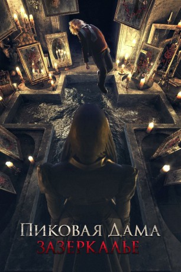

#12108 Queen of Spades - The Looking Glass
 
 IMDB-Wertung: 5.1 / 10
IMDB-Wertung: 5.1 / 10  Metascore: 0
Metascore: 0 
Die gruselige Pik-Dame kehrt zurück und will Blut! Schuld sind die Schüler eines Internats, die sich in einem alten Schloss zunächst die Zeit mit Gruselgeschichten über einer Kindermörderin von früher vertreiben, dann aber in einem verlassenen Teil des Gebäudes einen Spiegel finden, auf dem die merkwürdigen Zeichen der Pik-Dame sind. Die Schüler begehen den Fehler, die Pik-Dame anzurufen, damit die ihnen ihre intimsten Wünsche erfüllt. Sie haben keine Ahnung, dass die Pik-Dame ihre Seelen als Gegenleistung will. Und sie ist eine sehr ausdauernde Jägerin…
Jahr: 2019
Dauer: 83 Minuten
FSK: 16
Land: Russland Studio: Splendid FilmTonspuren:
Untertitel: Deutsch,
Auflösung: 1080p (1920x804) Größe: 5816 MB
Genre: Horror
Regisseur: Aleksandr Domogarov
Drehbuch: Maria Ogneva
Soundtrack: Sergei Stern
Darsteller:
- Tatyana Kuznetsova als Babushka Zheni
- Angelina Strechina als Olya
- Daniil Izotov als Artyom
- Yan Alabushev als Misha
- Darya Belousova als Valentina
- Claudia Boczar als Pikovaya dama / Grafinya Obolenskaya
- Violetta Davydovskaya als Mama Oli i Artyoma
- Vladimir Kanuhin als Zhenya
- Vladislav Konoplyov als Kirill
- Dmitriy Kulichkov als Sledovatel
- Valeriy Pankov als Igor Sergeevich
- Elvira Shilova als
- Alyona Shvidenkova als Sonya
- Anastasia Talyzina als Alisa
- Igor Yashanin als Gosha
Datei: X:\2019(N-Z)\Queen of Spades - The Looking Glass (2019, FSK16, 1920x804).mkv seit 05.12.2019
Festplatte: HD 2018(G-Z)-2019(A-Z)
 Es gibt insgesamt 62 Filme in der Gruppe '2019(N-Z)'
Es gibt insgesamt 62 Filme in der Gruppe '2019(N-Z)'